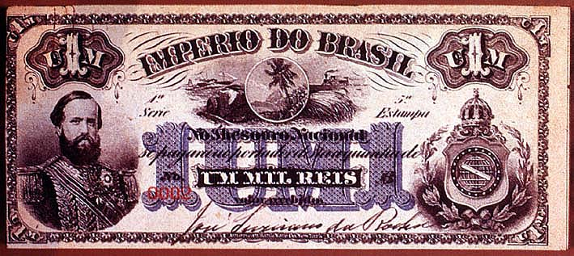

|
|  |
|
Mil réis, Brazilian Imperial banknote
|
Indeed, 'nature' had been a key component of the iconography of the Brazilian monarchical state, from Emperor Pedro II's ceremonial cape of toucano feathers and gold and green overcoat decorated with patterns of tobacco and sugar leaves, to medals and bank notes, where images of tropical plants and vistas would often appear side-by-side with portraits of the monarchs and images of the instruments of progress: the monarchy, these images suggested, was a site of mediation between an exceptionally gifted, harmonious nature and the forces of civilisation and modernity that had begun to transform and exploit it. Significant in this natural iconography of the state is the complete absence of allegorical representations of the nation: territory (and more precisely territory as 'natural space') and not 'imagined community' was the principal signifier of national sovereignty until 1889, when the Republic imposed 'from above' attempted to forge new representations of 'the people'.
|